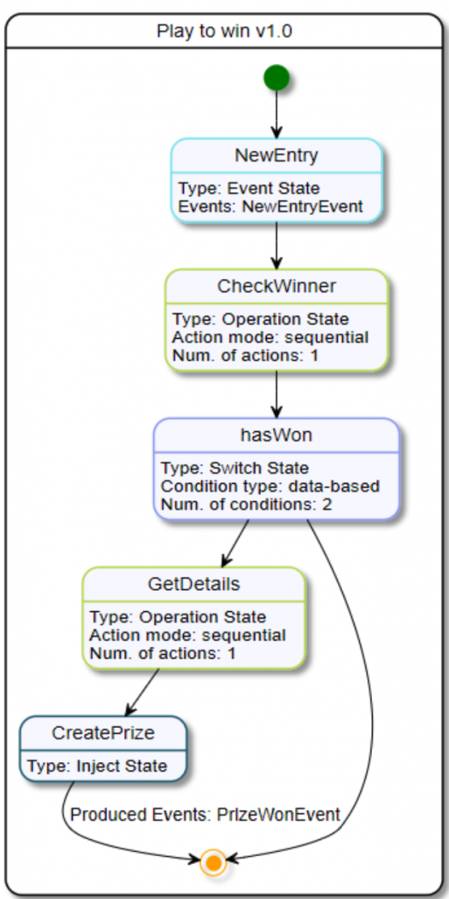

Testing Kogito Serverless Workflow with YAKS
The CNCF Serverless Workflow specification describes a declarative domain-specific language to define service orchestration in the serverless technology domain. YAKS is an Open Source testing framework that brings Behavior Driven Development (BDD) concepts to Kubernetes.
At the time of this writing, YAKS supports many technologies leveraged by Serverless Workflow such as Cloud events, RESTful services, OpenAPI, Kafka, and Knative eventing. So YAKS as a test framework is lined up to be a perfect fit for verifying Serverless workflows with automated end-to-end integration testing.
The following blog post describes how to write fully automated tests for a Kogito Serverless Workflow implementation that can be run in a CI/CD environment.
Understanding the Kogito Serverless Workflow example
The automated test in this post is about to verify a simple Serverless Workflow example that orchestrates several RESTful services via OpenAPI and connects to the Knative eventing message broker.
The sample workflow playtowin.sw.json allows users to participate in a simple game to win a prize.

The workflow gets triggered with a Knative event that holds the username of the participant. As a next step, the workflow calls a foreign scoring service to check if the user has won a prize.
In the following, the workflow evaluates the hasWon condition to find out which user actually has won a prize. According to the condition evaluation result, another foreign service is called to retrieve the user details (e.g. shipping address information).
The actual prize information gets injected into the final Knative event that gets published as a workflow outcome.
The workflow definition is implemented with Kogito and runs as an arbitrary container image in a Kubernetes Pod. The Kogito workflow implementation is packaged as a normal container image available on Quay (https://quay.io/repository/citrusframework/kogito-serverless-workflow-demo).
You can use the container image in a Knative service in order to run the workflow as a system under test in your user namespace.
---
apiVersion: serving.knative.dev/v1
kind: Service
metadata:
labels:
app.kubernetes.io/version: "1.0"
app.kubernetes.io/name: kogito-serverless-workflow-demo
name: kogito-serverless-workflow-demo
spec:
template:
metadata:
labels:
app.kubernetes.io/version: "1.0"
app.kubernetes.io/name: kogito-serverless-workflow-demo
spec:
containers:
- image: quay.io/citrusframework/kogito-serverless-workflow-demo:1.0
name: kogito-serverless-workflow-demo
ports:
- containerPort: 8080
name: http1
protocol: TCP
Once the workflow service is up and running we can start to write an automated YAKS test.
Writing the YAKS test
From a testing perspective the two foreign services for retrieving the winner scoring and the user details need to be simulated during the test. In addition to that the test needs to trigger the initial participant event to start the workflow. Last not least the resulting prize event needs to be verified on the Knative broker.
YAKS as a testing framework defines a BDD feature that is capable of describing all of these steps in one or more Gherkin Given-When-Then scenarios.
The YAKS test is a normal Cucumber BDD feature file that starts with a feature description and a background section to set the scene with some timeout configuration for the supporting services.
Feature: Kogito Serverless workflow - Play To Win Background: Given HTTP server timeout is 15000 ms Given Knative event consumer timeout is 20000 ms
The test now needs to provide several supporting services such as the Knative broker and the two foreign RESTful services for retrieving the winner scoring and the user details.
The Knative broker is automatically created in the user namespace with the following steps in the YAKS feature:
# Verify Knative broker Given create Knative broker default Given Knative broker default is running
YAKS is also able to create RESTful Http server components and expose these as Kubernetes services so the system under test can connect to these services.
# Create HTTP server Given HTTP server "kogito-test" Given create Kubernetes service kogito-test
The steps create a new HTTP server and Kubernetes service called kogito-test. The Kogito Serverless Workflow implementation should connect to this service during the test. So we need to set the Http base URI accordingly in the Kogito application.properties.
#org.kogito.openapi.client.xxx.base_path=http://url_here org.kogito.openapi.client.score.base_path=http://kogito-test org.kogito.openapi.client.employee.base_path=http://kogito-test
The base URI http://kogito-test makes sure that the Kogito workflow connects to the YAKS service. The YAKS test is able to receive the RESTful Http request calls in order to verify the request and provide a proper response.
The YAKS test also needs to consume the final Knative event when the user has actually won a prize. Therefore the test creates another supporting service and a Knative trigger to consume the event later in the test.
# Create prize event consumer service Given Knative service port 8081 Given create Knative event consumer service prize-service Given create Knative trigger prize-service-trigger on service prize-service with filter on attributes | type | prizes |
The Knative event consumer service uses a custom port 8081 . This is because the default port 8080 is already bound to the kogito-test supporting Http service that the test has created before that. The Knative trigger uses a filter on the event type prizes to consume the events on the Knative broker.
Now that all supporting services are prepared the test moves on to describing the actual workflow use case:
Scenario: User wins a prize
Given variable name is "krisv"
# Create new participant event
Given Knative event data: {"username": "${name}"}
Then send Knative event
| type | participants |
| source | /test/participant |
| subject | New participant |
| id | citrus:randomUUID() |
The first step creates a new participant event that should trigger the workflow. The test uses a variable name as username. Once the variable is declared it will be used throughout the whole test. Then the Cloud event is sent to the Knative broker. This should trigger the workflow so we expect a call on the winner scoring service as a next step in the test.
# Verify score service called
Given HTTP server "kogito-test"
When receive POST /scores
Then HTTP response body: {"result": true}
And HTTP response header: Content-Type="application/json"
And send HTTP 200 OK
This step receives the Http request and verifies the request content such as resource paths and the Http method. As a result the test defines a simulated Http response that holds the winner scoring result as Json payload. The test specifies that the user actually has won a prize (result=true).
This is a very important concept when writing automated tests in general. The test should always be in control of the use case so the next steps following are deterministic from a tester’s perspective. In this specific example the test always returns that the user wins a prize because this is the use case we want to verify.
Of course you can imagine writing another test where the user does not win a prize. With YAKS the tester is in full control of the returned Http response data so you can even verify proper error handling by choosing to respond with a 404 NOT FOUND or 500 INTERNAL SERVER ERROR response instead of a 200 OK.
Now that the user has won a prize the next step expects the workflow to call the user details service for retrieving some shipping information.
# Verify get employee details service called
When receive GET /employee/${name}
Then HTTP response body: {"firstName": "Kris", "lastName":"Verlaenen", "address":"Castle 12, Belgium"}
And HTTP response header: Content-Type="application/json"
And send HTTP 200 OK
Once again the test verifies a RESTful Http request. This time the request should be a Http GET request on the resource path /employee/${name}. The expected resource path is able to reference the name variable that the test has defined at the very beginning. As a response the test simulates some user details in the Http message body that get sent back to the workflow.
As a last step in this use case the test expects the final Knative prize event with the user details and the injected prize that the user has won:
# Verify prize won event
Given Knative service "prize-service"
Then expect Knative event data
"""
{
"username": "${name}",
"result": true,
"firstName": "Kris",
"lastName":"Verlaenen",
"address":"Castle 12, Belgium",
"prize": "Lego Mindstorms"
}
"""
And verify Knative event
| id | @ignore@ |
| type | prizes |
| source | /process/PlayToWin_ServerlessWorkflow |
The test consumes the final event and verifies the Cloud event data. YAKS uses the very powerful Json data validation capabilities of Citrus here. All Json properties and values are compared with the expected Json template given in the test. Message header and body get verified so the test makes sure that the workflow has published the event to Knative as expected.
This completes the test and when all steps are verified as expected we make sure that the workflow has orchestrated all RESTful services and Knative events for this use case under test.
You can review the complete feature file and the whole workflow implementation in the code repository for this example on GitHub: https://github.com/christophd/yaks-demo-kogito-sw
Use OpenAPI specifications
The two supporting services for winner scoring and user details define an OpenAPI specification. The Serverless workflow actually makes use of this specification to implement the RESTful Http requests. The YAKS test is able to load these OpenAPI specifications, too. This way the test is able to leverage the rules in the OpenAPI specification to verify the incoming request.
The OpenAPI specification for the scoring service looks as follows:
---
openapi: 3.0.3
info:
title: Score Service
version: 1.0.0
paths:
/scores:
get:
operationId: countWinners
responses:
"200":
description: OK
content:
text/plain:
schema:
format: int64
type: integer
post:
operationId: isWinner
responses:
"200":
description: OK
content:
application/json:
schema:
$ref: '#/components/schemas/ScoreResult'
components:
schemas:
ScoreResult:
type: object
properties:
result:
type: boolean
Instead of using pure HTTP level steps in the YAKS test as seen before YAKS is able to load the score.yaml OpenAPI specification and use the specification rules for verification purpose.
# Verify score service called Given HTTP server "kogito-test" Given OpenAPI service "kogito-test" Given OpenAPI specification: score.yaml Given OpenAPI outbound dictionary | $.result | true | When verify operation: isWinner Then send operation response: 200
The test just uses the operation identifier isWinner and the response identifier 200. Now the test loads the OpenAPI specification and automatically generates the request verification and the simulated Http response.
In the same way the test is able to also verify the user details service call by loading the employee.yaml OpenAPI specification.
# Verify get employee details service called Given OpenAPI specification: employee.yaml When verify operation: getEmployeeDetails Then send operation response: 200
The great advantage of this approach is that the test does not care about pure Http level details such as the used Http request method and resource paths. Instead the test loads this information from the OpenAPI specification. The test even generates the proper Json response content from the information given in the OpenAPI specification. This makes sure that the test is up to date with the specification and changes in the OpenAPI specification are directly seen in the test.
Running the test in CI/CD
You can run the YAKS test in a CI/CD environment in order to verify the Serverless Workflow implementation for instance with each commit or pull request on GitHub.
The code repository for the example used in this post uses a GitHub actions workflow that runs the test on a Kind cluster:
https://github.com/christophd/yaks-demo-kogito-sw/actions
The GitHub actions workflow installs Knative eventing as well as the YAKS operator to set the scene. Then the CI/CD workflow automatically deploys the system under test and runs the YAKS test via CLI tooling.
This completes this post on how to verify Serverless Workflow with automated YAKS tests. The example has shown how to interact with Knative eventing and OpenAPI to verify RESTful service orchestration.
YAKS is a quite new project and the group of maintainers is happy to receive any kind of feedback. Contributions are also very welcome!
Please feel free to join the discussions or even express your appreciation with a star on GitHub: https://github.com/citrusframework/yaks
Demo
Watch the demo recording and see the YAKS framework in action: